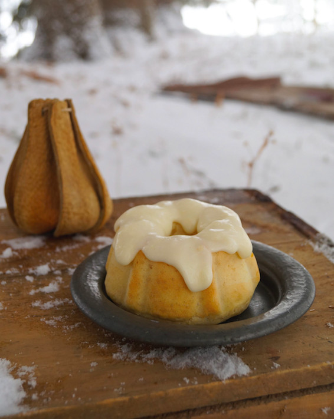

Sweetrolls!

Description
Don't let anyway steal your sweetrolls ever again. Instead of guarding your hard earned baked goods against bandits and that pesky Thieves Guild,now you can bake them in the quiet safety of your own home with none the wiser.
Ingredients
Rolls
- 2 Cups Milk
- 1 1/2 Cups Sugar
- 1 1/2 tbsp Active Dry Yeast
- 6 Cups Flour
- 6 Large Eggs
- 1 1/2 tbsp vanilla extract
s
- 220 grams unsalted butter
- Tube ban for baking
Frosting
- 1/2 Cup butter, softened
- 1 Cup Cream cheese
- 4 Cups Sugar
- 2 Tsp Vanilla extract
Steps